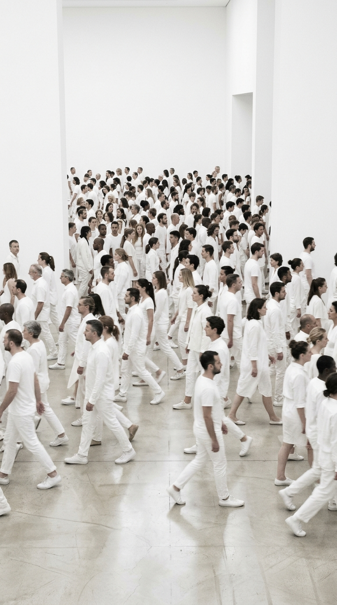

2層で逆方向に流しています。奥の列は右へ・ゆっくり・薄く、手前の列は左へ・大きく。これで初めて「すれ違い」が生まれます。※人物は静止画なので脚は動きません。本当に歩かせたいなら動画が必要です。
スクロールで画面に入った瞬間に、文字が時間差でスッと立ち上がります。見出しに品と“間”が出ます。
スクロール速度より画像がゆっくり動くので、奥行きと高級感が出ます。動きは控えめが上品。
画面に画像が張り付いたまま、上をコピーが流れていきます。ミニマル系サイトの定番演出。
数字が0から上がることで、成果セクションに“効いてる感”が出ます。
生活者目線とプロの洞察を組み合わせ、現場の接客品質を可視化します。
空間の価値を9つの視点からスコア化し、改善の起点をつくります。
経営層に、CXと空間品質を経営判断へ活かす視点を養います。
1方向・控えめに出すのがコツ。派手にすると一気に安っぽくなります。